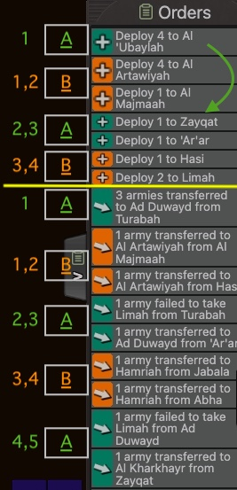
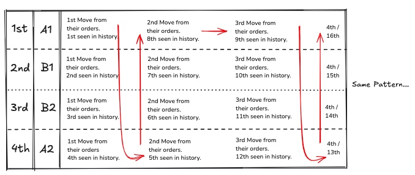
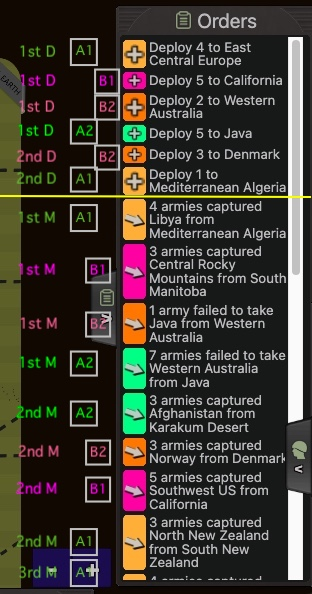
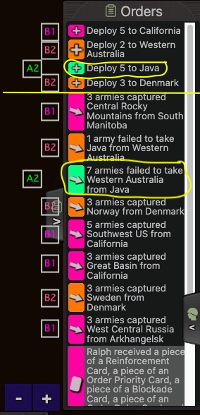
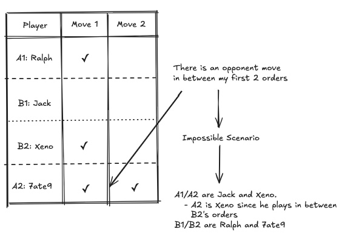
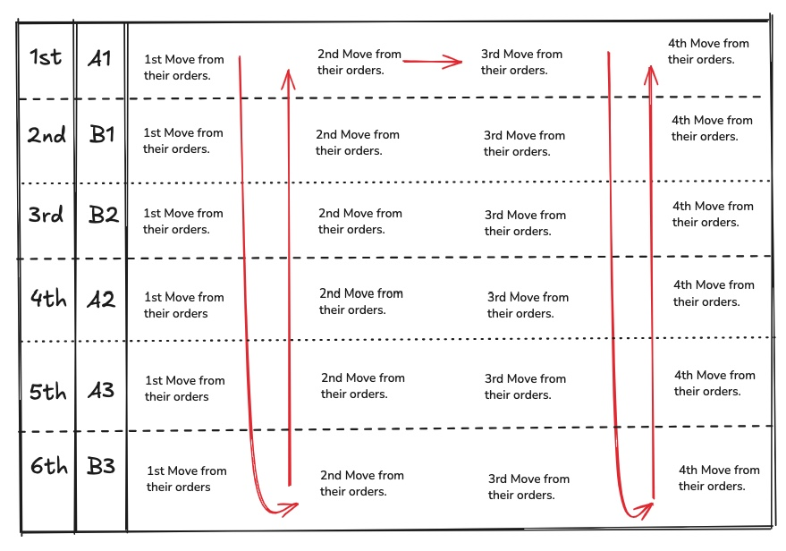
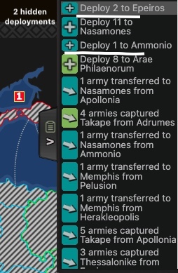
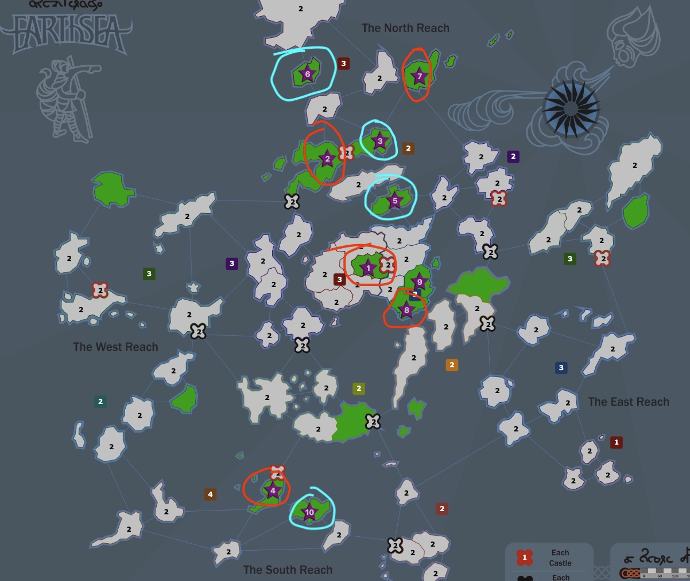
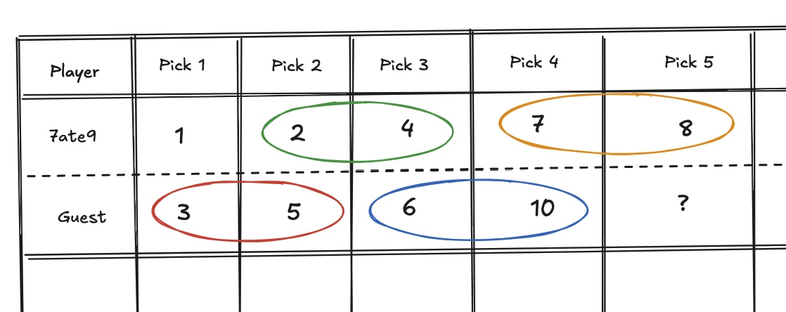

Move Order
Explanation of Move Order - ABBA

In accordance with Warzone Wiki Move Order Explanation, in a Warzone 1vs1 game between player A and player B, and under the assumption that player A has the first move, the move order alternates as ABBAABBAA…. This sequence can be described as follows:
- Player A executes their 1st move.
- Player B executes their 1st and 2nd moves consecutively.
- Player A executes their 2nd and 3rd moves consecutively.
- Player B executes their 3rd and 4th moves consecutively.
- Player A executes their 4th and 5th moves consecutively.
- Player B executes their 5th and 6th moves consecutively.
- And so on, following the ABBA pattern, with an example at Figure ABBA_image.
This pattern ensures that player A and player B alternate moves, with each player receiving consecutive moves in pairs after the first move by player A. The sequence ABBA then continues cyclically.
Of course, in the opposite case that player B has first move, then the move order follows the inverse pattern BAABBAABB …. The ABBA algorithm determines not only the order of moves but also the order of deployments, without exception. The arising question regarding the above rule, how is it decided which player moves first each turn. The answer to that question relies on the 3 different settings of implementation one can find upon creating a game. Needless to say, each game follows exactly 1 of the settings below:
- Random Move Order
- Cyclic Move Order
- No-Luck Cycle Move Order
Move Order Settings
Random Move Order
When a game is configured to Random Move Order, Warzone will randomize the move order on each turn. Very straight forward, no way to predict whether you have first move or not, it's a 50-50 chance. The ABBA pattern applies always.
When Warzone was first released, it resembled a lot Risk's settings of luck with dice rolls. Now I am not certain of this, but the game used to have only RMO for some years, with Fizzer pushing for a more strategic, less luck-heavy meta later on, which included cyclic and nlc. Older templates have RMO de facto. That has been the subject of discussion, with a lot of templates throughout time altered by the community from RMO to a periodic and predictable setting.
Cyclic Move Order
Suppose the picking phase of a Warzone's game is Turn 0, basically the only Turn happening prior to Turn 1, with the purpose of allocating territories to the 2 players based on their pick choices (assuming of course some manual distribution of territories). The first turn of the game (Turn 0), is randomised, just as it would be in the Random Move Order presented above, but subsequent turns reverse the order each time.
In an example of an 1vs1 game between player A and B, the dice is rolled during picking phase and let's assume for the sake of the example player A has 1st pick. Then player B gets 2 picks, then A gets 2 picks, and so on till both players exhaust the number of initial territories the corresponding template offers them. To sum it up, in Cyclic Move Order, and if player A had 1st pick, then:
- Every even Turn (Turn 2, 4, 6 etc) will involve the patter ABBAABB … meaning A has first move.
- Every odd Turn (Turn 1, 3, 5 etc) will involve the pattern BAABBAA … meaning B has first move.
What this implies is that move order is predictable. As long as you are able to perceive the move order once, you know who has first move each turn in the future and in the past.
No-Luck Cycle Move Order
No-Luck Cycle Move Order is the same as Cyclic, except that it aims to remove the random effect of the random roll on the first turn of who plays first. The initial order of the cycle is determined by how fast each player plays during their first turn. Under the assumption the game involves a manual distribution setting, the first turn is the picking phase, alternatively it's the first turn of the game. Whoever plays (and commits) faster, will be placed first in the move order.
Basically, whoever picks fastest can guarantee they will get their first pick of choice.
Discussion
If you study or at least come across games from the 2010s you'll quickly see that all templates featured RMO. The introduction of cyclic and NLC started as an attempt at reducing the luck factor in games. However this is a very controversial topic of discussion. NLC degrades
Move Order in Team Games
2vs2
Team Games (2vs2s and 3vs3s) tend to have cyclic move order. Expanding on this, the order follows the same ABBA pattern. In a 2vs2 game between Team A (players A1 and A2) and Team B (players B1 and B2), the move order would follow the pattern A1,B1,B2,A2 ,A2,B2,B1,A1 , A1,B1,B2,A2 …
This is best illustrated in the Figure moveorder_2v2s. Also remember that the ABBA pattern follows both the moves - orders and the deployments.

For example, in this Strategic 2vs2 game when checking the history from everyone's POV as well as my POV after Turn 1 we see Figure ex1 and ex2.


After Turn 1 me and my teammate should be able to figure out the move order within seconds. Upon seeing history, it's straight forward that on Turn 1 the order is Ralph->7ate9, with Xeno making an attack visible to us in between 7ate9's 1st and 2nd move. If Xeno and Jack were team B, then the moves we see in history are impossible to take place, considering the move order would be A1->B1->B2->A2->A2, implying that A2, in this case 7ate9, would have 2 consecutive moves (Figure 2v2deriving). As a result, Xeno/Jack are team A, and the move order is revealed to be:
- Odd Turns: 1.Jack, 2/3 Ralph, 7ate9, 4. Xeno
- Even Turns (and picks): 1. Xeno 2/3 7ate9, Ralph, 4. Jack

Following the same Strategic 2vs2 game, after figuring the Move Order, the next step is utilizing that so as to get any information possible for the opponent spawns as well as expansion and leftover armies.
3vs3
Similarly to 2vs2 games, 3vs3 also tend to have cyclic move order. Expanding on this, the order follows the same ABBA pattern. In a 3vs3 game between Team A (players A1, A2 and A3) and Team B (players B1, B2 and B3), the move order would follow the pattern A1,B1,B2,A2,A3,B3 ,B3,A3,A2,B2,B1,A1 , A1,B1,B2,A2,A3,B3 …
This is best illustrated in the Figure 3vs3. Also remember that the ABBA pattern follows both the moves - orders and the deployments.

Order of Deployment
Best explained with an example Chris vs Ragnar, MTL. I received my first 3 picks. End of turn 3 I meet up an opponent an a very suspicious place. Look at the game from my POV turn 4, specifically the deployments that took place.

I deploy 3 times and then I see my opponent's deployment of 8 armies. I can derive from his capture of 4 armies that on that specific turn, I had 1st move. Deployments also follow move order. That means Ragnar deployed in 2 places or more before deploying on the border vs me. Get into the habit of hiding your position and income. If your opponent is repeatedly making this again and again and again, use that information against them.
Another example is Chris vs Gincompetent, 1vs1 Ladder, Turn 4. I know from the attacks that have taken place, that I have first move on turn 4. And my opponent deploys elsewhere twice, then on me. + I see all his delays. After such a turn you should be able to understand exactly where you opponent is. Invest those 3 minutes to understand the position and find the winning moves.
Figuring the Move Order based on pick outcome
On guessing with some certainty the move order from the pick outcome in non-light fog templates. examples from inss, or templates with a lot of picks, where you can be somewhat certain what the move order is based on the picks. Not 100% but somewhat certain.
For example in this Earthsea game (my picks are pretty bad, don't use this as a guideline for how to pick on the template), I receive 1/2/4/7/8 and lose 3/5/6 as well 10. The issue after the territory allocation is that without information on the move order, I cannot make sound moves as me and Guest are contesting two red +1 castles.

But let's assume that I was first pick, meaning Guest moves first on turn 1. Then the allocation would have to look as shown below which logically speaking doesn't make sense from any possible perspective. With the numbers below identifying the territories as I picked them:
- If Guest decided to include all the territories that border the +1s, or 3/4 of those, in his first 4 picks, it is impossible for me get 3/4 as first pick. It would have to be 7ate9: 1, Guest: 2,3, 7ate9: 4,5 etc but I received 1,2,4.
- If Guest decided to do picks in order of 1->2->3->5 prioritising the central +1 followed by the ftb I picked at 2/3/5, or did his first three picks on my 2/3/5, it again doesn't make sense.
It is useful in your own games to try and apply trial and error into thinking what was your opponents idea in picks so as to derive how they will act upon the distribution they received, as well as the move order. In this game, while I am not certain of the move order, I am fairly confident I was second pick and choose to play my moves under that assumption.
